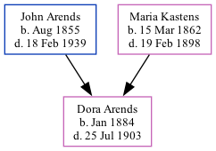

Dora S Arends 1884 - 1903
[ Home ] | [ Surnames Index ] | [ Family History ]The child of John Arends and Maria Kastens, was born in Nebraska in Jan 18841. In 1900, she was living in Rock Creek, Otoe, Nebraska1.
She died on Jul 25, 1903.
Parents
- John Herman was born in Aug 1855
- Maria Lucia Elise was born on Mar 15, 1862
Citations
- 1900 United States Federal Census Ancestry.com Operations Inc (Age: 16; Marital Status: Single; Relation to Head of House: Daughter)
Family Tree
Data (GEDCOM) maintained by Jay Weston Hannah, Omaha, Nebraska, USA.
Website generated by ged2site. Last updated on Jun 18, 2024.